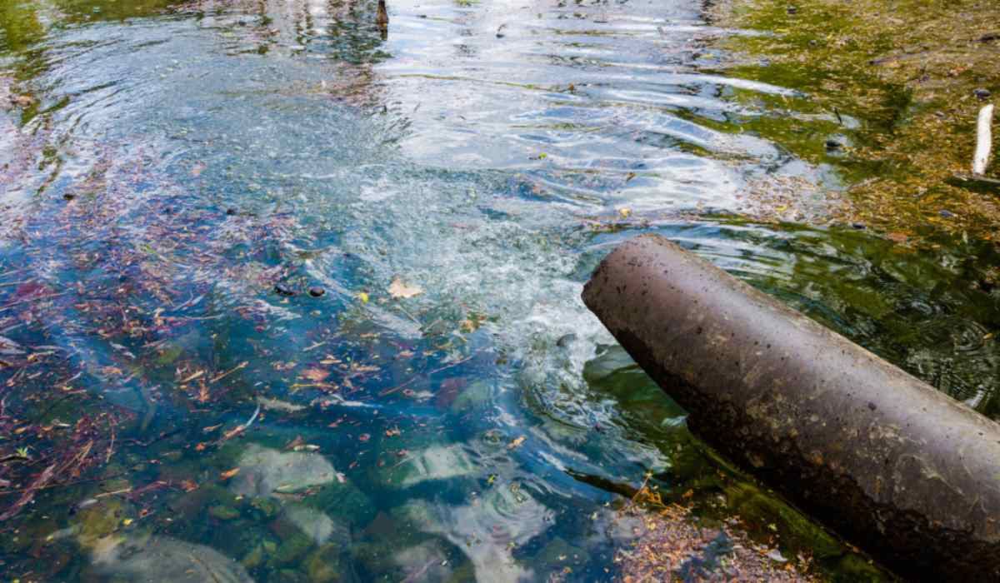
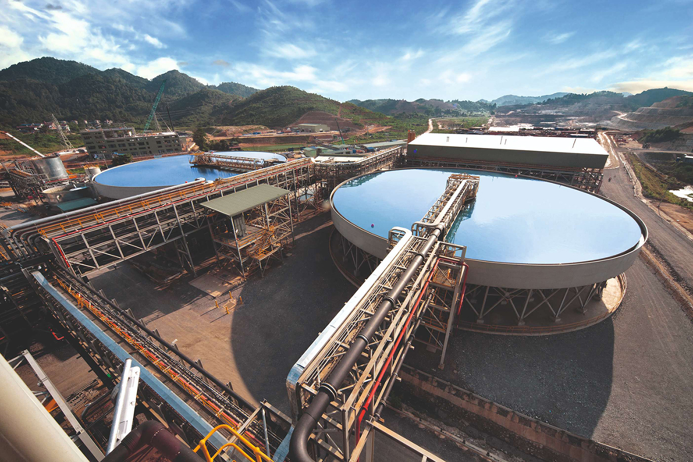
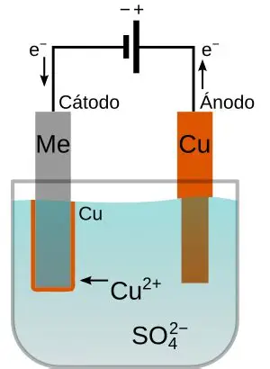
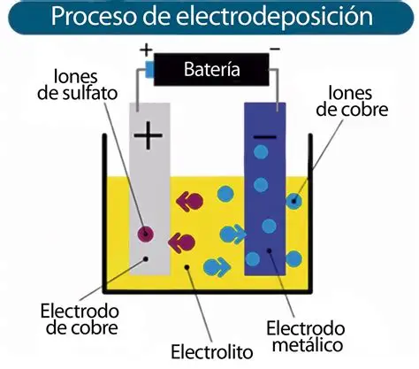
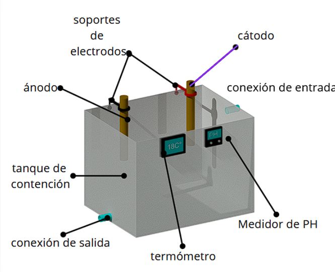
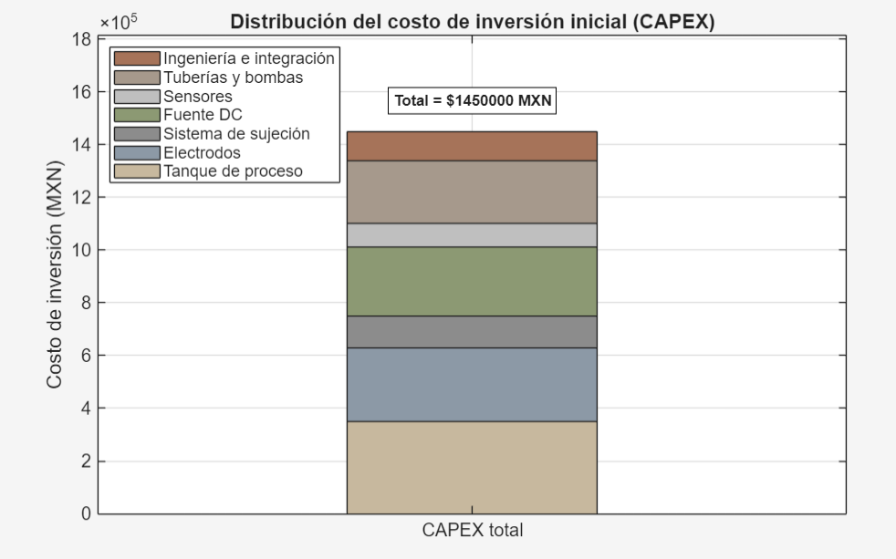
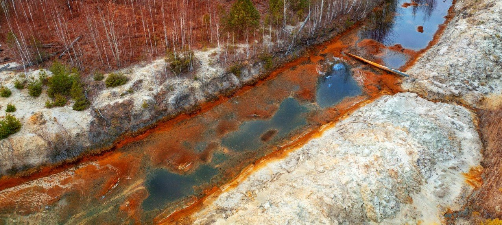
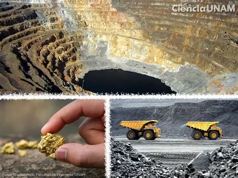
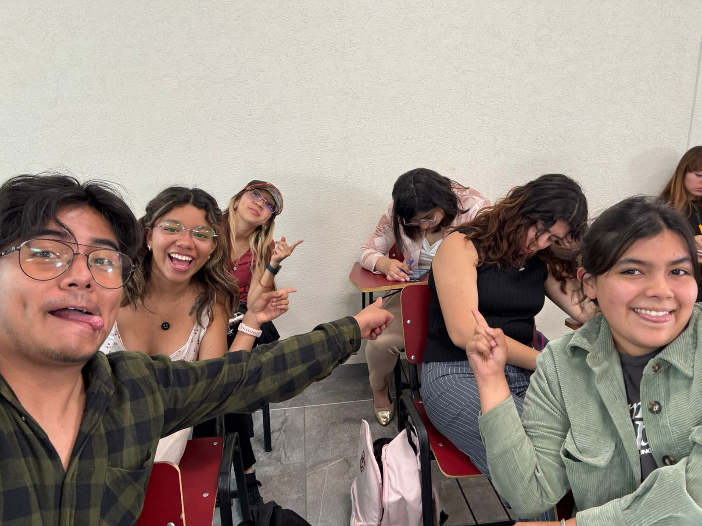
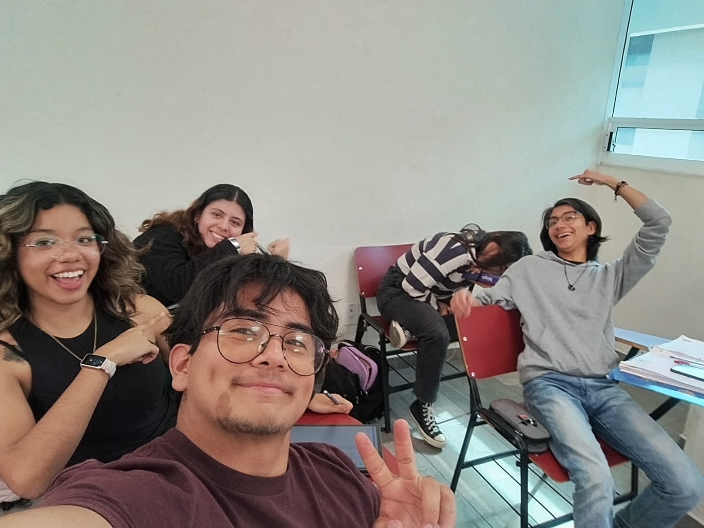

Apartados del proyecto

Objetivos

Alcance
Marco jurídico

Marco teórico

Metodología

Diseño (Modelo 3D)

Análisis de costos

Impacto ambiental

Potencial de implementación
Integrantes:
- Cibrian Sánchez Nohemí Valeria
- López D Arbell Camila
- Minero Segura María Fernanda
- Ortega Gayosso David
- Trujillo Flores Adriana Leonor
- Zúñiga Galán Erick


Objetivos
El propósito central es implementar un sistema de tratamiento de aguas residuales industriales basado en electrodeposición. Esto busca reducir la concentración de metales pesados en efluentes mineros para permitir su reutilización o vertido seguro.
Alcance
El proyecto pretende purificar líquidos contaminados con plomo, cobre, cadmio y níquel en plantas de tratamiento mineras. Se espera generar un impacto positivo no solo ambiental, sino también socioeconómico mediante la creación de empleos para su operación y mantenimiento.
Marco jurídico
Se fundamenta en el derecho humano a un medio ambiente sano (Artículo 4º constitucional) y la facultad del Estado para regular recursos naturales (Artículo 27º). Cumple con la LGEEPA, la Ley de Aguas Nacionales y Normas Oficiales Mexicanas como la NOM-001-SEMARNAT-2021 sobre límites de contaminantes en descargas.
Marco teórico
Utiliza la electrólisis, proceso donde la corriente eléctrica separa compuestos en un electrolito a través de electrodos. Específicamente, la electrodeposición ocurre cuando los cationes metálicos migran al cátodo y se reducen, depositándose como metal sólido.
Metodología
Consiste en un diseño conceptual y simulación en AutoCAD, seguido de la selección de materiales como acero inoxidable y titanio. El procedimiento incluye la adición de electrolitos, aplicación de corriente continua y el monitoreo de variables como pH y temperatura para evaluar la eficiencia de remoción.
Diseño del sistema – Modelo 3D
Presenta un modelo 3D con un tanque de acrílico transparente que permite observar el proceso. Incluye conexiones para entrada/salida de agua, electrodos intercambiables (ánodo y cátodo) y pantallas para el control continuo de la temperatura y el pH.
Análisis de costos
Es netamente positivo, logrando eficiencias de remoción de hasta el 99% y minimizando la generación de lodos peligrosos. Además, fomenta la economía circular al recuperar metales y ofrece la posibilidad de integrarse con energía solar en zonas áridas.
Impacto ambiental
La inversión inicial para un prototipo varía entre $45,000 y $79,000 MXN. A escala piloto-industrial, el costo aumenta, pero se compensa con bajos gastos operativos y un ingreso potencial por la venta del metal recuperado (como el cobre), siendo más competitivo que tecnologías como las membranas.
Potencial de implementación
Existe una gran oportunidad en la minería mexicana, que utiliza en promedio 152 millones de litros de agua diarios. Al ser una "tecnología limpia" que evita reactivos químicos voluminosos, es ideal para cumplir con las crecientes exigencias de evidencia científica y salud ambiental.